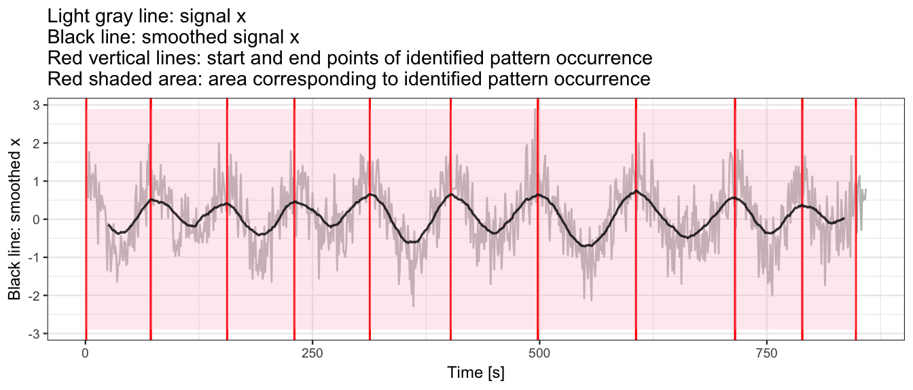

Introduction to adept package
Marta Karas
2019-04-16
Source:vignettes/adept-intro.Rmd
adept-intro.RmdIntro
adept package implements ADaptive Empirical Pattern Transformation (ADEPT) for pattern segmentation in a time-series x. ADEPT is designed for identification of walking strides in sub-second level data collected with wearable accelerometers. ADEPT was validated ([1]) using data collected with sensors worn at left wrist, left hip and both ankles.
This vignette introduces ADEPT algorithm and demonstrates the usage of segmentPattern function which implements ADEPT approach. Here, we focus on examples with simulated data; see the Walking strides segmentation with adept vignette for the example of walking stride segmentation in real-life data.
ADEPT method
ADEPT identifies patterns in a time-series x via maximization of chosen similarity statistic (correlation, covariance etc.) between a time-series x and a pattern template(s). It accounts for variability in both (1) pattern duration and (2) pattern shape.
Pattern template
We define pattern template as a 1-dimensional numeric vector which values represent the pattern of interest (e.g. accelerometry data of a human stride).
- See [1] where we show a way to derive walking stride templates from accelerometry data collected at left wrist, left hip and both ankles.
- See [2] where we employed templates derived in [1] to segment stride pattern from another accelerometry data set.
In this vignette, a pattern template is a simulated data vector.
Pattern segmentation with adept package
The examples below are organized into suites. Examples within one suite share data simulation settings, for example: Examples 1: signal with no noise, same-length pattern.
Examples 1: signal with no noise, same-length pattern
Simulate data
Simulate data:
- no noise in a simulated time-series
x, - all patterns in a simulated time-series
xof the same length (vector length:101).
## Generate signal and pattern template
x0 <- cos(seq(0, 2 * pi * 10, length.out = 1001))
x <- x0
template <- x0[1:101]
## Plot time-series `x`
data.frame(x = 1:length(x), y = x) %>%
ggplot() + geom_line(aes(x = x, y = y)) + theme_bw(base_size = 9) +
labs(x = "Time [s]", y = "Value", title = "Time-series x")
Plot pattern template.
data.frame(x = seq(0, 1, length.out = 101), y = template) %>%
ggplot() +
geom_line(aes(x = x, y = y), color = "red") +
theme_bw(base_size = 9) +
labs(x = "Template phase", y = "Value", title = "Pattern template")
Example 1(a): segment pattern
We use segmentPattern function to segment patterns within a time-series x.
pattern.dur.seq <- c(90, 100, 110)
out <- segmentPattern(
x = x,
x.fs = 1,
template = template,
pattern.dur.seq = pattern.dur.seq,
similarity.measure = "cor",
compute.template.idx = TRUE)
out
#> tau_i T_i sim_i template_i
#> 1 1 100 0.9994793 1
#> 2 101 100 0.9994793 1
#> 3 201 100 0.9994793 1
#> 4 301 100 0.9994793 1
#> 5 401 100 0.9994793 1
#> 6 501 100 0.9994793 1
#> 7 601 100 0.9994793 1
#> 8 701 100 0.9994793 1
#> 9 801 100 0.9994793 1
#> 10 901 100 0.9994793 1
segmentPattern output
Each row of the output data frame describes one identified pattern. E.g. the \(i\)-th row contains values of:
-
tau_i- start of the \(i\)-th pattern in the data, expressed as a time-seriesxindex, -
T_i- \(i\)-th pattern duration, expressed as a time-seriesxvector length, -
sim_i- similarity (here: correlation) between a pattern template and a time-seriesx, -
template_i- index of a pattern template best matched to a pattern in the time-seriesx(here: one pattern template was used, hence alltemplate_i’s equal 1).
See Details in segmentPattern documentation.
Example 1(b): use pattern.dur.seq to modify a grid of pattern duration
We next generate a dense grid of potential pattern durations, including value 101 used in signal simulation to obtain a perfect match (sim_i = 1).
pattern.dur.seq <- 90:110 ## Assume dense pattern duration grid ranging 90-110 seconds
out <- segmentPattern(
x = x,
x.fs = 1,
template = template,
pattern.dur.seq = pattern.dur.seq,
similarity.measure = "cor",
compute.template.idx = TRUE)
out
#> tau_i T_i sim_i template_i
#> 1 1 101 1 1
#> 2 101 101 1 1
#> 3 201 101 1 1
#> 4 301 101 1 1
#> 5 401 101 1 1
#> 6 501 101 1 1
#> 7 601 101 1 1
#> 8 701 101 1 1
#> 9 801 101 1 1
#> 10 901 101 1 1
Example 1(c): use x.fs to modify x time-series frequency
We use x.fs to modify x time-series frequency, expressed in a number of observations in seconds, and we adjust pattern.dur.seq accordingly. We observe that results stay the same as in Example 1(b).
pattern.dur.seq <- 90:110 * 0.01 ## Assume pattern duration grid ranging 0.9-1.1 seconds
out <- segmentPattern(
x = x,
x.fs = 100, ## Assume data frequency 100 observations per second
template = template,
pattern.dur.seq = pattern.dur.seq,
similarity.measure = "cor",
compute.template.idx = TRUE)
out
#> tau_i T_i sim_i template_i
#> 1 1 101 1 1
#> 2 101 101 1 1
#> 3 201 101 1 1
#> 4 301 101 1 1
#> 5 401 101 1 1
#> 6 501 101 1 1
#> 7 601 101 1 1
#> 8 701 101 1 1
#> 9 801 101 1 1
#> 10 901 101 1 1Examples 2: signal with no noise, length of pattern varies
Simulate data
Simulate data:
- no noise in a simulated time-series
x, - length of patterns in a simulated time-series
xvaries.
set.seed(1)
## Simulate x as concatenated pattern occurrences of different length
true.pattern <- cos(seq(0, 2 * pi, length.out = 200))
s.grid <- sample(60:120, size = 10)
x <- numeric()
for (s.tmp in s.grid){
true.pattern.s <- approx(
seq(0, 1, length.out = 200),
true.pattern,
xout = seq(0, 1, length.out = s.tmp))$y
if (length(x) > 0){
x <- c(x, true.pattern.s[-1])
} else {
x <- c(x, true.pattern.s)
}
}
## Define template used further in segmentation
template <- true.patternPlot time-series x.
data.frame(x = 1:length(x), y = x) %>%
ggplot() + geom_line(aes(x = x, y = y)) + theme_bw(base_size = 9) +
labs(x = "Time [s]", y = "Value", title = "Time-series x")
Plot template.
data.frame(x = seq(0, 1, length.out = length(template)), y = template) %>%
ggplot() + geom_line(aes(x = x, y = y), color = "red") +
theme_bw(base_size = 9) + labs(x = "Template phase", y = "Value", title = "Template")
## Function to plot segmentation results with ggplot2
library(ggplot2)
out.plot1 <- function(val, out){
yrange <- c(-1, 1) * max(abs(val))
y.h <- 0
plt <- ggplot()
for (i in 1:nrow(out)){
tau1_i <- out[i, "tau_i"]
tau2_i <- tau1_i + out[i, "T_i"] - 1
plt <-
plt +
geom_vline(xintercept = tau1_i, color = "red") +
geom_vline(xintercept = tau2_i, color = "red") +
annotate(
"rect",
fill = "pink",
alpha = 0.3,
xmin = tau1_i,
xmax = tau2_i,
ymin = yrange[1],
ymax = yrange[2]
)
}
plt <-
plt +
geom_line(data = data.frame(x = 1:length(val), y = val),
aes(x = x, y = y),
color = "black",
size = 0.3) +
theme_bw(base_size = 9) +
labs(x = "Time [s]", y = "Black line: x",
title = "Black line: signal x\nRed vertical lines: start and end points of identified pattern occurrence\nRed shaded area: area corresponding to identified pattern occurrence")
plot(plt)
}Example 2(a): segment pattern
We use a dense grid of potential pattern duration, including all values used in signal simulation to again obtain the perfect match (sim_i = 1). In this example, the start and the end points of identified patterns are connected (see figure below).
pattern.dur.seq <- 60:120
out <- segmentPattern(
x = x,
x.fs = 1,
template = template,
pattern.dur.seq = pattern.dur.seq,
similarity.measure = "cor",
compute.template.idx = TRUE)
out
#> tau_i T_i sim_i template_i
#> 1 1 76 1 1
#> 2 76 82 1 1
#> 3 157 93 1 1
#> 4 249 112 1 1
#> 5 360 71 1 1
#> 6 430 110 1 1
#> 7 539 111 1 1
#> 8 649 95 1 1
#> 9 743 118 1 1
#> 10 860 63 1 1
## Plot segmetation results
out.plot1(x, out)
Example 2(b): use pattern.dur.seq to modify a grid of pattern duration
Next, we use a less dense grid of potential pattern duration. We observe that perfect match (sim_i = 1) between a template and time-series x is no longer obtained. Note:
- A less dense
pattern.dur.seqgrid yields a shorter time of method execution. - As explained later, when peak detection tuning is used, having a “maximally dense” pattern duration grid does not contribute much.
pattern.dur.seq <- c(60, 90, 120)
out <- segmentPattern(
x = x,
x.fs = 1,
template = template,
pattern.dur.seq = pattern.dur.seq,
similarity.measure = "cor",
compute.template.idx = TRUE)
out
#> tau_i T_i sim_i template_i
#> 1 9 60 0.9913537 1
#> 2 87 60 0.9875419 1
#> 3 158 90 0.9991040 1
#> 4 260 90 0.9925351 1
#> 5 365 60 0.9933033 1
#> 6 425 120 0.9967502 1
#> 7 549 90 0.9923207 1
#> 8 651 90 0.9986598 1
#> 9 742 120 0.9999117 1
#> 10 861 60 0.9979972 1
Example 2(c): use similarity.measure to modify similarity statistic
We use similarity.measure to modify the similarity statistic. We observe that sim_i values in the result data frame change and the segmentation results change slightly too. The explanation is that a change of similarity statistic takes an effect on ADEPT iterative maximization procedure.
pattern.dur.seq <- c(60, 90, 120)
out <- segmentPattern(
x = x,
x.fs = 1,
template = template,
pattern.dur.seq = pattern.dur.seq,
similarity.measure = "cov", ## Use covariance as a similarity statistic
compute.template.idx = TRUE)
out
#> tau_i T_i sim_i template_i
#> 1 9 60 0.5918631 1
#> 2 72 90 0.7339804 1
#> 3 173 60 0.4559175 1
#> 4 245 120 0.7289255 1
#> 5 365 60 0.6348018 1
#> 6 440 90 0.6108531 1
#> 7 534 120 0.7306629 1
#> 8 653 90 0.6897910 1
#> 9 742 120 0.7182487 1
#> 10 861 60 0.6989475 1
Examples 3: signal with no noise, length of pattern and pattern shape vary
Simulate data
Simulate data:
- no noise in simulated time-series
x, - length of patterns in a simulated time-series
xvaries, - two different shape patterns used to simulate a time-series
x.
## Simulate x as concatenated pattern occurrences of
## different length and different shape
set.seed(1)
s.grid <- sample(60:120, size = 5)
true.pattern.1 <- cos(seq(0, 2 * pi, length.out = 200))
true.pattern.2 <- true.pattern.1
seq.tmp <- 70:130
true.pattern.2[seq.tmp] <- 2 * true.pattern.2[min(seq.tmp)] + abs(true.pattern.2[seq.tmp])
x <- numeric()
for (ss in s.grid){
true.pattern.1.s <- approx(
seq(0, 1, length.out = 200),
true.pattern.1,
xout = seq(0, 1, length.out = ss))$y
if (length(x) > 0){
x <- c(x, true.pattern.1.s[-1])
} else {
x <- c(x, true.pattern.1.s)
}
true.pattern.2.s <- approx(
seq(0, 1, length.out = 200),
true.pattern.2,
xout = seq(0, 1, length.out = ss))$y
x <- c(x, true.pattern.2.s[-1])
}Plot time-series x.
## Plot time-series `x`
data.frame(x = 1:length(x), y = x) %>%
ggplot() + geom_line(aes(x = x, y = y)) + theme_bw(base_size = 9) +
labs(x = "Time [s]", y = "Value", title = "Time-series x")
Plot two vectors that were used in a time-series x simulation.
plt1 <-
data.frame(x = seq(0, 1, length.out = length(true.pattern.1)), y = true.pattern.1) %>%
ggplot() + geom_line(aes(x = x, y = y), color = "red") +
theme_bw(base_size = 9) + labs(x = "Template phase", y = "Value", title = "Template 1") +
scale_y_continuous(limits = c(-1,1))
plt2 <-
data.frame(x = seq(0, 1, length.out = length(true.pattern.2)), y = true.pattern.2) %>%
ggplot() + geom_line(aes(x = x, y = y), color = "red") +
theme_bw(base_size = 9) + labs(x = "Template phase", y = "Value", title = "Template 2") +
scale_y_continuous(limits = c(-1,1))
plt1;plt2

Example 3(a): segment pattern
We use a dense grid of potential pattern duration. We use a template object consisting of one out of two patterns used in a time-series x simulation.
pattern.dur.seq <- 60:120
template <- true.pattern.1 ## Template consisting of one out of two patterns
out <- segmentPattern(
x = x,
x.fs = 1,
template = template,
pattern.dur.seq = pattern.dur.seq,
similarity.measure = "cor",
compute.template.idx = TRUE)
out
#> tau_i T_i sim_i template_i
#> 1 1 76 1.0000000 1
#> 2 76 76 0.9288369 1
#> 3 151 82 1.0000000 1
#> 4 232 82 0.9288407 1
#> 5 313 93 1.0000000 1
#> 6 405 93 0.9286870 1
#> 7 497 112 1.0000000 1
#> 8 608 112 0.9285767 1
#> 9 719 71 1.0000000 1
#> 10 789 71 0.9292973 1
## Plot segmetation results
out.plot1(x, out)
Example 3(b): use similarity.measure.thresh to modify threshold of minimal similarity
We use similarity threshold to segment only these patterns which have similarity sim_i (here: covariance) greater than the threshold value. Note that using the threshold may substantially speed up method execution.
pattern.dur.seq <- 60:120
template <- true.pattern.1
out <- segmentPattern(
x = x,
x.fs = 1,
template = template,
pattern.dur.seq = pattern.dur.seq,
similarity.measure = "cor",
similarity.measure.thresh = 0.95,
compute.template.idx = TRUE)
out
#> tau_i T_i sim_i template_i
#> 1 1 76 1 1
#> 2 151 82 1 1
#> 3 313 93 1 1
#> 4 497 112 1 1
#> 5 719 71 1 1
## Plot segmetation results
out.plot1(x, out)
Example 3(c): use multiple templates simultaneously
Use two templates simultaneously in segmentation. We observe that index of a pattern template best matched to a pattern in the time-series x is 1 and 2 interchangeably.
pattern.dur.seq <- 60:120
## Use two templates simultaneously in segmentation
template <- list(true.pattern.1,
true.pattern.2)
out <- segmentPattern(
x = x,
x.fs = 1,
template = template,
pattern.dur.seq = pattern.dur.seq,
similarity.measure = "cor",
compute.template.idx = TRUE)
out
#> tau_i T_i sim_i template_i
#> 1 1 76 1 1
#> 2 76 76 1 2
#> 3 151 82 1 1
#> 4 232 82 1 2
#> 5 313 93 1 1
#> 6 405 93 1 2
#> 7 497 112 1 1
#> 8 608 112 1 2
#> 9 719 71 1 1
#> 10 789 71 1 2
## Plot segmetation results
out.plot1(x, out)
Examples 4: signal with noise, length of pattern occurrences and pattern shape vary
Simulate data
Simulate data:
- add noise to a simulated time-series
x, - length of patterns in a simulated time-series
xvaries, - two different shape patterns used to simulate a time-series
x.
Here, we use a time-series x generated above in Examples 3.
Plot a time-series x.
data.frame(x = 1:length(x2), y = x2) %>%
ggplot() + geom_line(aes(x = x, y = y), size = 0.3) + theme_bw(base_size = 9) +
labs(x = "Time [s]", y = "Value", title = "Time-series x")
Example 4(a): segment pattern
We use two pattern templates simultaneously in segmentation.
pattern.dur.seq <- 60:120
template <- list(true.pattern.1,
true.pattern.2)
out <- segmentPattern(
x = x2,
x.fs = 1,
template = template,
pattern.dur.seq = pattern.dur.seq,
similarity.measure = "cor",
compute.template.idx = TRUE)
out
#> tau_i T_i sim_i template_i
#> 1 2 72 0.8535560 1
#> 2 76 78 0.7624407 2
#> 3 156 75 0.7818015 1
#> 4 234 72 0.6939557 2
#> 5 305 109 0.8512611 1
#> 6 413 75 0.6190537 2
#> 7 497 109 0.8228649 1
#> 8 608 108 0.7349471 2
#> 9 717 76 0.8293969 1
#> 10 792 61 0.5502773 2
## Plot segmetation results
out.plot1(x2, out)
Example 4(b): use x.adept.ma.W to smooth x for similarity matrix computation
We use x.adept.ma.W to define a length of a smoothing window to smooth x for similarity matrix computation; x.adept.ma.W is expressed in seconds and the default is NULL (no smoothing applied).
Smoothing of a time-series x
Function windowSmooth allows observing the effect of smoothing for different values of smoothing window length W. W is expressed in seconds.
- Here,
W = 10seems to be a plausible choice.
x2.smoothed <- windowSmooth(x = x2, x.fs = 1, W = 10)
data.frame(x = 1:length(x2.smoothed), y = x2.smoothed) %>%
ggplot() + geom_line(aes(x = x, y = y)) + theme_bw(base_size = 9) +
labs(x = "Time [s]", y = "Value", title = "Time-series x smoothed")
#> Warning: Removed 8 rows containing missing values (geom_path).Use x.adept.ma.W = 10 and compare with results from Example 4(a). Observe that using a smoothed version of x in similarity matrix computation is pronounced in sim_i values in the output data frame, as well as in a slight change in tau_i and T_i values.
out <- segmentPattern(
x = x2,
x.fs = 1,
template = template,
pattern.dur.seq = pattern.dur.seq,
similarity.measure = "cor",
x.adept.ma.W = 10,
compute.template.idx = TRUE)
out
#> tau_i T_i sim_i template_i
#> 1 4 69 0.9935740 1
#> 2 76 79 0.9607909 2
#> 3 158 70 0.9831188 1
#> 4 233 78 0.9818980 2
#> 5 312 95 0.9823877 1
#> 6 406 88 0.9510599 2
#> 7 495 114 0.9821003 1
#> 8 608 111 0.9879948 2
#> 9 718 72 0.9942539 1
#> 10 790 66 0.9398574 2
## Plot segmetation results
out.plot1(x2, out)
Example 4(c): use fine-tune procedure for peak detection
Employ a fine-tuning procedure for stride identification. See segmentPattern documentation for more details.
Fine-tune procedure "maxima"
Fine-tune procedure "maxima" tunes preliminarily identified start and end of a pattern occurrence so as they correspond to local maxima of x found within neighborhoods of the preliminary locations.
- The parameter
finetune.maxima.nbh.W, expressed in seconds, defines a length of the two neighborhoods within which we search for local maxima. - Smoothed version of
xmay be used for local maxima search (as presented later).
out <- segmentPattern(x = x2,
x.fs = 1,
template = template,
pattern.dur.seq = pattern.dur.seq,
similarity.measure = "cor",
x.adept.ma.W = 10,
finetune = "maxima",
finetune.maxima.nbh.W = 30,
compute.template.idx = TRUE)
out
#> tau_i T_i sim_i template_i
#> 1 4 67 0.9935740 1
#> 2 70 78 0.9123034 2
#> 3 147 80 0.9831188 1
#> 4 226 78 0.9327744 2
#> 5 303 100 0.9823877 1
#> 6 402 94 0.9559945 2
#> 7 495 115 0.9823238 1
#> 8 615 104 0.9879948 2
#> 9 718 75 0.9942539 1
#> 10 792 61 0.9373485 2
## Plot segmetation results
out.plot1(x2, out)
We observe that almost all identified pattern occurrence start/end points are hitting the time point which our eyes identify as local x maxima. The exception takes place around time point 600; the explanation for it is that an identified pattern cannot be longer than 120 seconds given we used potential pattern duration grid ranging from 60 to 120 seconds.
Example 4(d): use fine-tune procedure and smooth signal for peak detection
We smooth x for both similarity matrix computation (set x.adept.ma.W = 10) and for fine-tune peak detection procedure (set finetune.maxima.nbh.W = 30).
- Here,
W = 50seems to be a plausible choice for fine-tune peak detection procedure as it removes (“smooth together”) multiple local maxima ofx, leaving out a single one.
x2.smoothed <- windowSmooth(x = x2, x.fs = 1, W = 50)
data.frame(x = 1:length(x2.smoothed), y = x2.smoothed) %>%
ggplot() + geom_line(aes(x = x, y = y)) + theme_bw(base_size = 9) +
labs(x = "Time [s]", y = "Value", title = "Time-series x smoothed aggresively")
#> Warning: Removed 48 rows containing missing values (geom_path).
pattern.dur.seq <- 60:120
template <- list(true.pattern.1,
true.pattern.2)
out <- segmentPattern(
x = x2,
x.fs = 1,
template = template,
pattern.dur.seq = pattern.dur.seq,
similarity.measure = "cor",
x.adept.ma.W = 10, ## smoothing parameter for similarity matrix computation
finetune = "maxima", ## use fine-tuning
finetune.maxima.ma.W = 50, ## smoothing parameter for peak detection in fine-tuning
finetune.maxima.nbh.W = 30, ## neighborhoods length in fine-tuning
compute.template.idx = TRUE)
out
#> tau_i T_i sim_i template_i
#> 1 1 72 0.9935740 1
#> 2 72 85 0.9607909 2
#> 3 156 75 0.9831188 1
#> 4 230 84 0.9818980 2
#> 5 313 90 0.9823877 1
#> 6 402 97 0.9627633 1
#> 7 498 109 0.9815284 1
#> 8 606 110 0.9828041 2
#> 9 715 75 0.9942539 1
#> 10 789 60 0.9398574 2Plot segmentation results.
## Function to plot nice results visualization
out.plot2 <- function(val, val.sm, out){
yrange <- c(-1, 1) * max(abs(val))
y.h <- 0
plt <-
ggplot() +
geom_line(data = data.frame(x = 1:length(val), y = val),
aes(x = x, y = y),
color = "grey")
for (i in 1:nrow(out)){
tau1_i <- out[i, "tau_i"]
tau2_i <- tau1_i + out[i, "T_i"] - 1
plt <-
plt +
geom_vline(xintercept = tau1_i, color = "red") +
geom_vline(xintercept = tau2_i, color = "red") +
annotate(
"rect",
fill = "pink",
alpha = 0.3,
xmin = tau1_i,
xmax = tau2_i,
ymin = yrange[1],
ymax = yrange[2]
)
}
plt <-
plt +
geom_line(data = data.frame(x = 1:length(val.sm), y = val.sm),
aes(x = x, y = y),
color = "black", size = 0.6, alpha = 0.8) +
theme_bw(base_size = 9) +
labs(x = "Time [s]",
y = "Black line: smoothed x",
title ="Light gray line: signal x\nBlack line: smoothed signal x\nRed vertical lines: start and end points of identified pattern occurrence\nRed shaded area: area corresponding to identified pattern occurrence")
plot(plt)
}## Plot segmetation results
out.plot2(x2, windowSmooth(x = x2, x.fs = 1, W = 50), out)
#> Warning: Removed 48 rows containing missing values (geom_path).
References
1: Karas, M., Straczkiewicz, M., Fadel, W., Harezlak, J., Crainiceanu, C., Urbanek, J.K. Adaptive empirical pattern transformation (ADEPT) with application to walking stride segmentation, Submitted to Biostatistics, 2018.
2: Karas, M.: Walking strides segmentation with adept vignette.